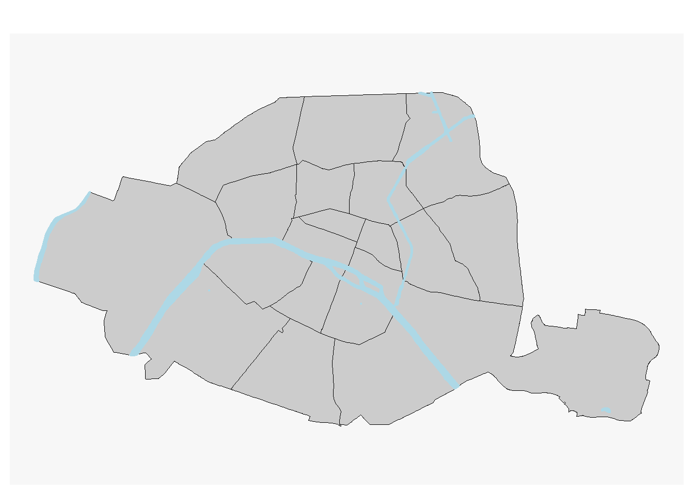
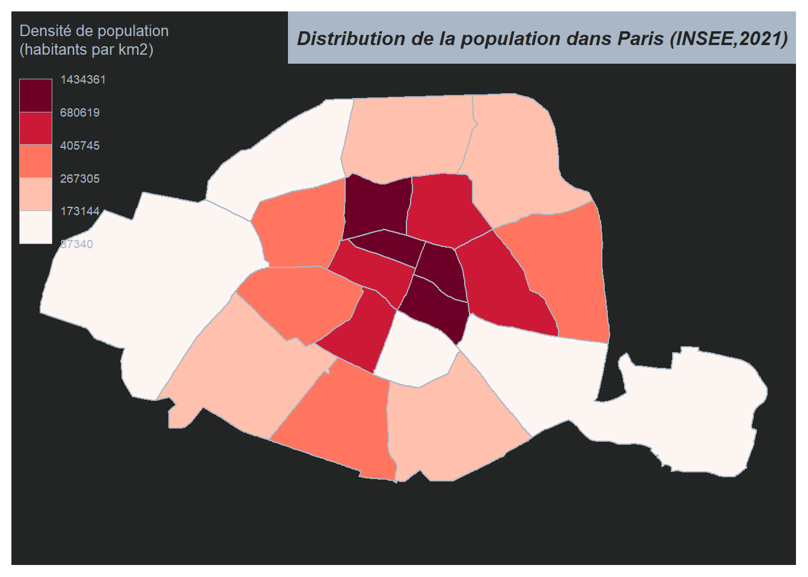
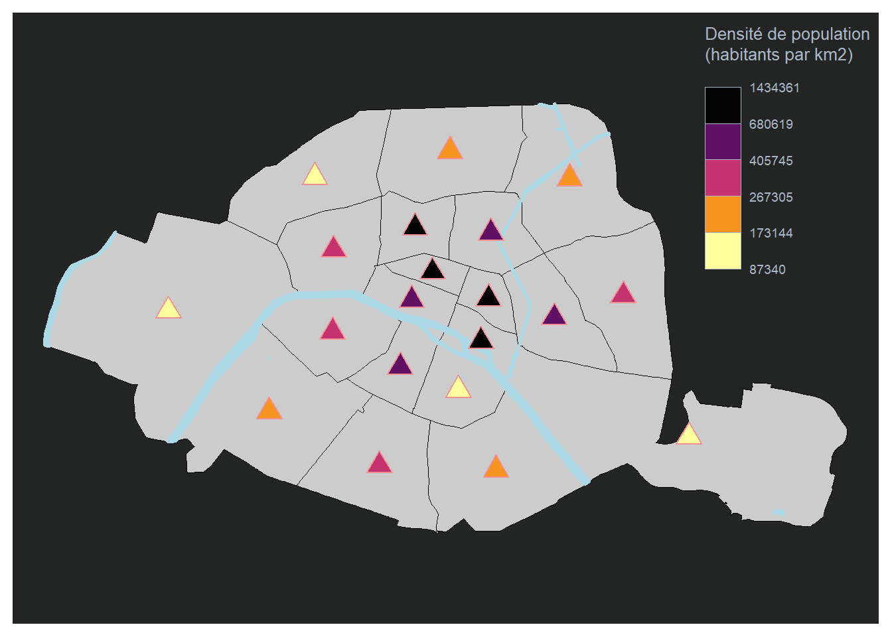
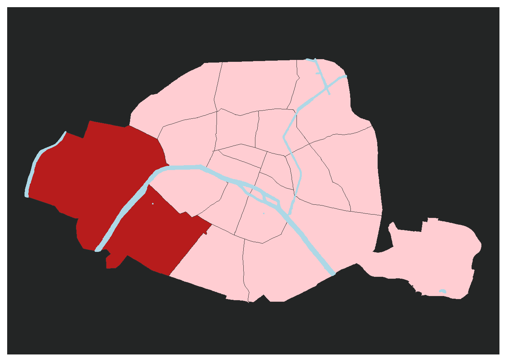

library(mapsf)Warning: package 'mapsf' was built under R version 4.2.3library(sf)Warning: package 'sf' was built under R version 4.2.3Linking to GEOS 3.9.3, GDAL 3.5.2, PROJ 8.2.1; sf_use_s2() is TRUENous allons réaliser des cartes avec R à l’aide du packages install.packages(“mapsf”).
library(mapsf)Warning: package 'mapsf' was built under R version 4.2.3library(sf)Warning: package 'sf' was built under R version 4.2.3Linking to GEOS 3.9.3, GDAL 3.5.2, PROJ 8.2.1; sf_use_s2() is TRUENous allons réaliser une carte des arrondissments de Paris. J’ai récupérer les données sur le site de Paris Data : https://opendata.paris.fr/pages/catalogue/?disjunctive.theme&disjunctive.publisher
Je réalise un fond de carte.
# ----- Import des données -----
arrondissements <- st_read(dsn = "https://opendata.paris.fr/explore/dataset/arrondissements/download/?format=geojson&timezone=Europe/Berlin&lang=fr")Reading layer `OGRGeoJSON' from data source
`https://opendata.paris.fr/explore/dataset/arrondissements/download/?format=geojson&timezone=Europe/Berlin&lang=fr'
using driver `GeoJSON'
Simple feature collection with 20 features and 9 fields
Geometry type: POLYGON
Dimension: XY
Bounding box: xmin: 2.224078 ymin: 48.81558 xmax: 2.469761 ymax: 48.90216
Geodetic CRS: WGS 84cours_deau<-st_read(dsn="https://opendata.paris.fr/api/explore/v2.1/catalog/datasets/plan-de-voirie-voies-deau/exports/geojson?lang=fr&timezone=Europe%2FBerlin")Reading layer `OGRGeoJSON' from data source
`https://opendata.paris.fr/api/explore/v2.1/catalog/datasets/plan-de-voirie-voies-deau/exports/geojson?lang=fr&timezone=Europe%2FBerlin'
using driver `GeoJSON'
Simple feature collection with 58 features and 25 fields
Geometry type: MULTIPOLYGON
Dimension: XY
Bounding box: xmin: 2.224081 ymin: 48.81924 xmax: 2.450555 ymax: 48.90207
Geodetic CRS: WGS 84#Dans un premier temps je réalise mon fond de carte avec les arrondissments de Paris
mf_map(x = arrondissements, border = "black")
#Je rajoute les cours d'eau sur mon fond de carte avec l'argument "add=TRUE"
mf_map(x=cours_deau,lwd=2,border="lightblue",col="lightblue",add=TRUE)
# d'un point de vue esthétique je choisis d'appliquer un fond noir à mes cartes
mf_theme("darkula")Les différents type de cartes

Les cartes à symboles proportionels
Les cartes à symboles proportionnels sont une méthode de représentation graphique utilisée pour visualiser les variables de stocks, ce qui correspond à des variables quantitatives absolues pour lesquelles la somme et la moyenne ont une signification.
arrondissements$pop <- c(1012687, 903036, 1369857, 1491027, 1672009, 1506475, 1637163, 1603380, 1637542, 1059282, 1494945, 1436205, 1705774, 1425805, 236769, 1668605, 1674568, 1539668, 1421827, 1829526) #INSEE,2021
mf_map(x = arrondissements, border = "black")
mf_map(x=cours_deau,lwd=2,border="lightblue",col="lightblue",add=TRUE)
mf_map(
x = arrondissements,
var = "pop",
type = "prop",
leg_title = "Population totale\12 271 794",
col="#F39487",
add= TRUE
)
mf_title("Distribution de la population dans Paris")
Les cartes choroplètes
Les cartes choroplèthes sont une méthode courante de représentation graphique utilisée pour visualiser les variables de ratios, qui correspondent à des variables quantitatives relatives pour lesquelles la moyenne a un sens, mais la somme n’a pas de sens.
#création de la variable densite
arrondissements$DENS <- 1e6 * arrondissements$pop / as.numeric(st_area(arrondissements))
mf_map(
x = arrondissements,
var = "DENS",
type = "choro",
breaks = "quantile",
pal = "Reds",
lwd = 1,
leg_title = "Densité de population\n(habitants par km2)",
leg_val_rnd = 0
)
mf_title("Distribution de la population dans Paris (INSEE,2021)")
On peut aussi représenter ces variables sous d’autres forme:
arr_c<-st_centroid(arrondissements)Warning: st_centroid assumes attributes are constant over geometriesmf_map(x = arrondissements, border = "black")
mf_map(x=cours_deau,lwd=2,border="lightblue",col="lightblue",add=TRUE)
mf_map(
x = arr_c,
var = "DENS",
type = "choro",
breaks = "quantile",
pal = "Inferno",
pch = 24,
cex = 2,
border = "#F29094",
lwd = 1,
leg_title = "Densité de population\n(habitants par km2)",
leg_val_rnd = 0,
add= TRUE
)
Et si on regroupait deux arrondissemtns ?
# Identifier les arrondissements à regrouper (ici le 15e et le 16e)
arr_15_16 <- arrondissements[arrondissements$c_ar %in% c("15", "16"),]
# Créer un jeu de données géographiques pour la zone d'intérêt
zone_interet <- st_intersection(arr_15_16)although coordinates are longitude/latitude, st_intersection assumes that they
are planar# Créer un vecteur de couleurs pour les arrondissements et la zone d'intérêt
colors <- c("#FFCDD2", "#B71C1C")
# Afficher la carte avec les arrondissements et la zone d'intérêt
mf_map(arrondissements, col = colors[arrondissements$c_ar%in% c("15", "16") + 1])
mf_map(x=cours_deau,lwd=2,border="lightblue",col="lightblue",add=TRUE)
Pour la rédaction de cet article je me suis grandement inspirée du travail de Timothée Giraud.